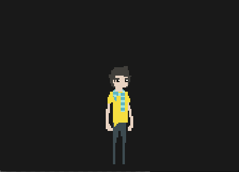

To the prev guide
To the next guide
View all guides
Output image

Drawing images instead of blocks
This tutorial follows on the previous guide. Read that one first.
Below is a list of what we will cover, and a demo:
- image loading
- sprite flipping
- pixel art scaling
- mapping input
Live demo
Press A/left to move left
Press D/right to move right
Click to run example
Loading an image asset
Assets are async
Asset loading is inherently asynchronous, and luxe treats them this way. This just means that you have to load an asset before you can use it - and it will be ready when it’s done loading. You can’t use it before it’s loaded, right?
luxe facilitates working this way by providing simple to use API’s for loading and pre loading your assets and data. The following API’s are available:
- The config preload parcel
- The
Parcelloader - The
load_*api which returns aPromise
Don’t worry if these don’t make a whole lot of sense yet, they will be introduced as the tutorials progress.
Some notes on words
In luxe, the word Texture is used, it’s just another way to say image - It’s a more formal word that the hardware APIs use.
Also you will notice the phoenix package pop up. phoenix is the name of the rendering backend that luxe is built on.
Actually loading an image
Let’s start by loading the image of a player sprite, so we can move it around later. To do that, we will use the config preload parcel, which is simply a list of assets and things to load before ready gets called!
Because this happens before ready, it doesn’t have a preloader progress bar, so if you did want to have one of those the next tutorial will show you how to add one.
Just like ready - the config function is an overridden function in the game class, and is where we can configure our application, window, and more before it starts up. This happens first, and before ready - so be aware of that.
//The config function is simple: It hands us a default config,
//we modify the values that we want to change, and then we
//return it with the modifications.
override function config( config:luxe.AppConfig ) {
//This time, we are going to modify the preload parcel texture list,
//and add our texture for the sprite, so that it will exist when we
//try to use it during `ready`
config.preload.textures.push({ id:'assets/stand.png' });
return config;
} //config
And then when ready happens, we now have access to the loaded texture via the resources API. We simply fetch the existing texture like this:
//fetch the previously loaded texture!
var image = Luxe.resources.texture('assets/stand.png');
Using the image
In ready, the image is available as show above, so now we can set the filtering for pixel art. We can also calculate a good size that fits the current window, and create the player sprite to display it.
Like in the previous guide, Sprites are imported as luxe.Sprite, and created with the new Sprite( options ) pattern. You will notice that we give the texture to the sprite this time. If you don’t specify the size parameter, the texture size will be used.
override function ready() {
//fetch the previously loaded texture!
var image = Luxe.resources.texture('assets/stand.png');
//keep pixels crisp when scaling them, for pixel art
image.filter_min = image.filter_mag = FilterType.nearest;
//work out the correct size based on a ratio
var height = Luxe.screen.h/1.75;
var width = (height/image.height) * image.width;
//this is an arbitrary ratio I made up :)
move_speed = width*3;
//create the actual visible player, give it the texture
player = new Sprite({
name: 'player',
texture: image,
pos : new Vector(Luxe.screen.mid.x, Luxe.screen.h - (height/1.75)),
size: new Vector(width, height)
});
//set up keys for moving around
connect_input();
} //ready
Basic input handling
To move the player around a bit, we will use one of a few methods to handle input. This type of input handling is called “immediate query” style handling, as you check every frame for input and process it. There are also the event based callbacks as well.
To make this type of input less hardcoded, i.e you don’t want to hardcode which key is being used for which action, we will use a feature of luxe called “named input binding”.
This let’s us bind multiple keys to a single name, and then we can check if that name is in a down state. That way, if for example you were making a game with customizable controls (which you should always aim to do) this makes it easier to do.
function connect_input() {
//here, we are going to bind A/left and D/right into a single named
//input event, so that we can keep our movement code the same
Luxe.input.bind_key('left', Key.left);
Luxe.input.bind_key('left', Key.key_a);
Luxe.input.bind_key('right', Key.right);
Luxe.input.bind_key('right', Key.key_d);
} //connect_input
The movement logic
In this case, we will use extremely simple movement logic by shifting the player along the x axis (in the next guide, we will add animations as well).
As you can see, we ask luxe if the input named “left” is pressed down. If that is true, we move left, and flip the image so it faces the correct way. If they are pressing right, we flip it the other direction and move along that direction.
override function update( delta:Float ) {
if(Luxe.input.inputdown('left')) {
player.pos.x -= move_speed * delta;
player.flipx = true;
} else if(Luxe.input.inputdown('right')) {
player.pos.x += move_speed * delta;
player.flipx = false;
}
} //update
Notes
- Where do I find a list of all the
Spriteoptions?
Read the Sprite options documentation. Other forms of input handling?
- Event based: These functions are available in
Game,State,Componentand other classes, you override them to listen for the events.
- Event based: These functions are available in
mouse:
onmousedown,onmouseup,onmousemove,onmousewheel- touch:
ontouchdown,ontouchup,ontouchmove - keys:
onkeydown,onkeyup,ontextinput - gamepad:
ongamepaddown,ongamepadup,ongamepadaxis - named binding:
oninputup,oninputdown
You can see more information in the input guide.
To the prev guide
To the next guide
Back to guides
Code listing 2
(found in samples/guides/2_sprites/)
import luxe.Input;
import luxe.Sprite;
import luxe.Vector;
import phoenix.Texture;
class Main extends luxe.Game {
var player : Sprite;
//set by the screen size later
var move_speed : Float = 0;
//The config function is simple: It hands us a default config,
//we modify the values that we want to change, and then we
//return it with the modifications.
override function config( config:luxe.AppConfig ) {
//This time, we are going to modify the preload parcel texture list,
//and add our texture for the sprite, so that it will exist when we
//try to use it during `ready`
config.preload.textures.push({ id:'assets/stand.png' });
return config;
} //config
override function ready() {
//fetch the previously loaded texture!
var image = Luxe.resources.texture('assets/stand.png');
//keep pixels crisp when scaling them, for pixel art
image.filter_min = image.filter_mag = FilterType.nearest;
//work out the correct size based on a ratio
var height = Luxe.screen.h/1.75;
var width = (height/image.height) * image.width;
//this is an arbitrary ratio I made up :)
move_speed = width*3;
//create the actual visible player, give it the texture
player = new Sprite({
name: 'player',
texture: image,
pos : new Vector(Luxe.screen.mid.x, Luxe.screen.h - (height/1.75)),
size: new Vector(width, height)
});
connect_input();
} //ready
function connect_input() {
//here, we are going to bind A/left and D/right into a single named
//input event, so that we can keep our movement code the same when changing keys
Luxe.input.bind_key('left', Key.left);
Luxe.input.bind_key('left', Key.key_a);
Luxe.input.bind_key('right', Key.right);
Luxe.input.bind_key('right', Key.key_d);
} //connect_input
override function update( delta:Float ) {
//This is using the "immediate query" api
//there is also oninputdown like onkeydown and onmousedown
if(Luxe.input.inputdown('left')) {
player.pos.x -= move_speed * delta;
player.flipx = true;
} else if(Luxe.input.inputdown('right')) {
player.pos.x += move_speed * delta;
player.flipx = false;
}
} //update
override function onkeyup( e:KeyEvent ) {
if(e.keycode == Key.escape) {
Luxe.shutdown();
}
} //onkeyup
} //Main